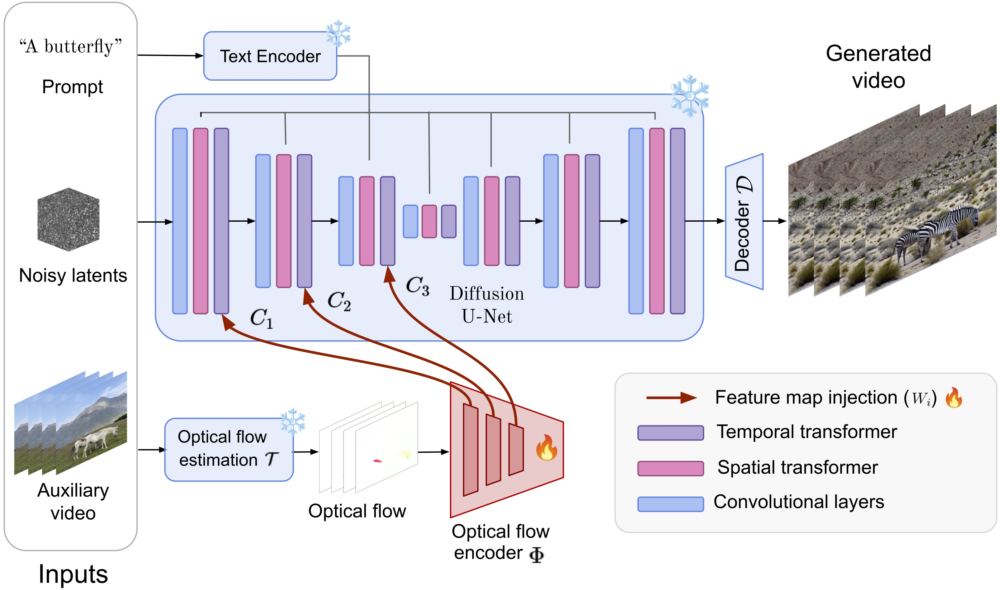

Conditioning strength
Adjusting the optical-flow conditioning strength changes how closely the generated motion follows the reference.
Each row increases γ from 0 to 1 while keeping the prompt and input motion fixed.
We consider text-to-video generation with precise control for applications such as camera movement control and video-to-video editing. Most existing methods rely on user-defined signals such as binary masks or camera embeddings. We propose OnlyFlow, an approach that extracts optical flow from an input video and uses it to condition the motion of generated videos.
An optical-flow estimator processes the input video, then a trainable encoder produces feature maps injected into the frozen text-to-video backbone. Quantitative, qualitative, and user-preference studies show that OnlyFlow compares favorably with state-of-the-art methods across several tasks, despite not being trained specifically for each one. It offers a versatile, lightweight, and effective form of motion control.
Adjusting the optical-flow conditioning strength changes how closely the generated motion follows the reference.
Each row increases γ from 0 to 1 while keeping the prompt and input motion fixed.
OnlyFlow can drive camera movement using either another video or a preset motion field representing a camera trajectory.
All videos use the same prompt, pan-left trajectory, and seed. OnlyFlow recovers camera-control behavior without task-specific training.
The method balances motion fidelity with image realism.
Methods share the same prompt and input video. OnlyFlow compares favorably with depth-conditioned approaches and remains competitive in temporal coherence and image quality.
Generated content follows both the text and the supplied optical flow.
With the prompt “Trees in forest,” the flow of a smile guides the structure of the generated scene.

OnlyFlow architecture. A text prompt, noisy diffusion latents, and the optical flow of a reference video form the inputs. A trainable optical-flow encoder produces feature maps injected into the temporal layers of a frozen video diffusion U-Net, so the output follows both the prompt and the reference motion.
@inproceedings{koroglu2025onlyflow,
author = {Koroglu, Mathis and Caselles-Dupr\'e, Hugo and Jeanneret, Guillaume and Cord, Matthieu},
title = {OnlyFlow: Optical Flow based Motion Conditioning for Video Diffusion Models},
booktitle = {CVEU 2025 Workshop at CVPR},
year = {2025},
pages = {6280--6290}
}This work has been partially supported by the VISA DEEP chair (grant ANR-20-CHIA-0022), the PostGenAI@Paris cluster (grant ANR-23-IACL-0007; France 2030), and funded by the French National Research Agency (ANR) under the Renaissance project (grant ANR-23-CE23-0023; France 2030).
This project was provided with computing HPC & AI and storage resources by GENCI at IDRIS thanks to grant 2024-AD011014329R1 on the supercomputer Jean Zay’s V100 & A100 partitions.